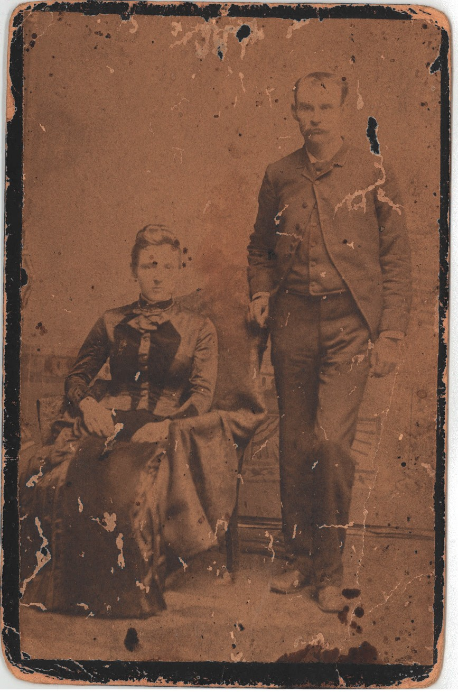
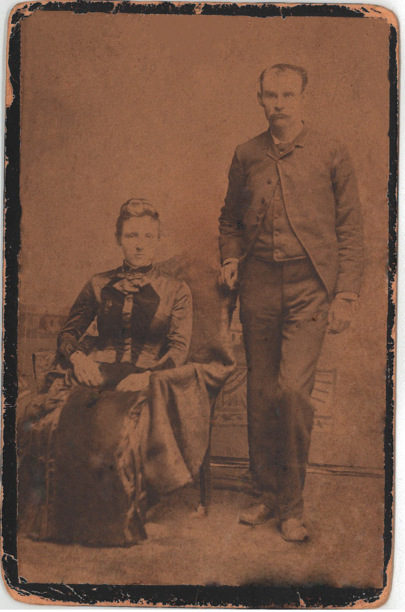

Photoshop Restoration Project
I know what you're thinking. Yes, this is the photo of my husband's great great grandparents. Based on the back of the photo (not pictured, clearly), they travelled to Atlanta, GA from Upstate South Carolina to take this photo. The original that is on the left is over 100 years old, taken sometime in the late 1800s.
My goal in restoring this photo was to clear up the subject of the photograph. I was not as concerned with the edges of the photo as it is old and I wasn't trying to make it look anything other than what it is. The contrast definitely leaves a lot to be desired. But it's a very old image. Not sure what you'd expect at this point.
And anyway, my husband was very happy with the result. So that's the true victory here.
 